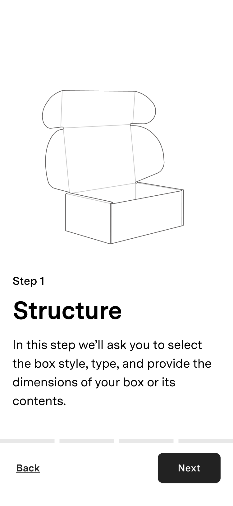
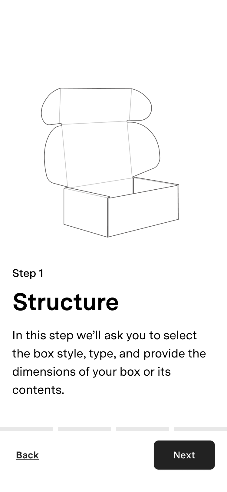

Lumi Marketplace
Connecting brands with packaging suppliers.
- Timeline
- 6 months
- Role
- End-to-end product design
- Collaborators
- 1 project manager, 4 engineers
- Tools
- Figma
- Website
- lumi.com (sunset Jan 2024)
Background
Since its founding, Lumi has been dedicated to providing a platform that allows businesses to order custom packaging easily. As the founding designer at Lumi, I spent my first five years at the company designing and helping to launch interfaces that allowed clients to request quotes and place orders, our team to manage orders and quote requests, and our suppliers to respond to quote requests.
The Problem
Lumi representatives managed the flow of information between clients and suppliers. As our clients grew, users reported communication delays and production errors. We needed to remove this bottleneck and make Lumi more scalable.

Current flow of information. Lumi team members pass information between clients and suppliers.
Ideal flow of information. Information passes freely between clients and suppliers using Lumi.
The Goal
Design a new quote request flow that allows customers to request quotes and communicate with suppliers without intervention from our team.
Research
Though I was given an idea of the scope of this project during kick-off, I wanted to make sure I understood all of the nuances and pain points of our current flow so I could design a flow that best addressed the needs of our clients.
Current workflow
I started by interviewing our team members who acted as intermediaries between customers and manufacturers to determine when they needed to intervene in the quote request process.
Diagram of the current quoting workflow. I created a workflow diagram to map out our team's involvement in the current quoting process.
I determined that the most common reasons for intervention by our team were to collect missing information, ask clarifying questions on behalf of suppliers, and provide packaging consulting for novice clients.
Client experience
I then interviewed our clients and had them walk me through their current quote request flow to understand their struggles better.
Journey map of the client experience. Based on my client interviews, I created a journey map to highlight the pain points our clients were experiencing during the quoting process.
From these interviews, I learned that our clients' main struggles were that they didn't understand the options in the quote request form, the questions required too much detail, and it was difficult to complete the flow on their mobile devices.
Brainstorming
Next, I took the information I gathered from the interviews I conducted and started trying to imagine what the quoting workflow would look like if we removed our team from the process and allowed clients and suppliers to interact directly through the platform.

Diagram of new planned quoting workflow. A new seamless flow between clients and suppliers that includes Expert Services as a fallback if clients need more help.
I also integrated into this flow a new concept that we had been exploring called "Expert Services," an add-on service outside of the normal quote request flow that pairs novice clients with packaging designers and consultants to help them develop their packaging.
Now that I had an overall flow outlined and had the sign-off from stakeholders, I began to brainstorm what the overall structure of this flow could look like. I wanted to get a consensus on the relationships between the different entities before diving into any specific area in more detail.
Screenflow diagram of the proposed quoting workflow. Depicts the different entities and how they fit into the overall quoting flow.
Requesting quotes
Now that I had an idea of the project's overall flow and shape, I started to investigate one of the most critical components of this workflow: the quote request form.
One of the most significant underlying issues with the existing quote request form was that it wasn't initially designed for use by our clients. It was originally developed for internal use by our team members with packaging expertise.
A portion of the existing quote request form. TThis form was initially developed for internal use by our team members, not clients.
Because the form was built for people with packaging expertise, features that would have been helpful for clients, like contextual information and allowing less detailed specifications, were not prioritized.
Since this project aimed to reduce the amount of intervention by our team, it was the perfect time to finally design a form specifically for clients that addressed these issues.
Contextual Information
Without enough information about the options they were choosing from, clients were unable to respond to some questions. To solve this, I incorporated novel input methods, like the card selector pictured below, that help provide contextual information during selection.
Selecting a box style. I incorporated an illustration depicting the shape of each style to help clients make a more informed choice.
Specificity vs Flexibility
The original form could capture very detailed information, but requiring that level of specificity precluded clients from being able to provide basic info.
For example, clients could list each Pantone color they want to use for printing but couldn't simply state the number of print colors they wanted. To solve this, I reduced the specificity required, allowing clients to provide less detailed information and integrated more fallback options, i.e., "I don't know."
Selecting printing options. I simplified the options to make it easier for clients to convey the information they know.
The issue of specificity was particularly problematic when selecting a material. A client could select from a list of liner boards of different material colors and thicknesses, but if they only knew that they wanted a white box, they could not simply select "white."
As a result, clients would either not select a material at all, which required our team to follow up with them, or they would choose a material randomly, which could lead to inaccurate quotes and production issues.
To solve this, I utilized progressive disclosure to allow clients to select a color, and then if they selected a color, they could optionally choose a material. This change created the flexibility to capture information at all levels of specificity, resulting in more accurate quotes.
Selecting material options. I incorporated progressive disclosure to allow clients to choose a color and optionally choose a material.
Creating structure
While this layout provided more focus and felt less overwhelming than a single-page layout, going through screen after screen without structure felt daunting. To alleviate this, I decided to add structure to the flow by dividing it into a couple of clearly defined sections.


Dividing the flow into sections. Grouped the pages of the flow into clearly defined sections to provide structure.
This change helped provide focus when starting each section and a sense of momentum after completing a section.
Optimized for mobile
When we built the initial version of the quote request form for our internal team to use, the team optimized the density of information over mobile accessibility since our team was always conducting their work on desktop computers.
However, after we allowed our clients to start using the form, we learned that these people were often on the go and using their mobile devices as their primary means to request quotes and communicate with our team.
So, while I was designing the marketplace, I worked on mobile designs concurrently with designs for larger screens. That way, I could ensure the designs work for all our users.

 

Mobile designs. A few of the mobile optimized designs.
Sending to suppliers
When we initially launched the marketplace, we sent quote requests to all our suppliers capable of manufacturing the requested packaging. However, after talking with suppliers and getting feedback on their experiences with the new flow, we learned that suppliers were getting burned out because the number of quotes they submitted was far higher than the number of contracts they won.
To remedy this, I added a final step to the quote request form so that when clients go to send their request, they must first select which suppliers they want to send it to.
Sending to suppliers. Clients have to select which suppliers they want to receive quotes from.
This change helped reduce our supplier burnout and increased the response rate from our suppliers.
Collaborate & Select
Accessing information

Diagram of proposed screenflow.
Project page
Project page.
Messaging center
Messaging center.
Access to projects

Projects list page.
Homepage.
Optimized for mobile


Optimized for mobile.
Outcomes
With the marketplace launch, we saw a 50% reduction in the average wait time to receive quotes and a 40% reduction in the average time the sales team spent per quote request.
While 60% of existing clients still expected a more hands-on approach from our sales team, 75% of new clients we onboarded after launching the marketplace were able to complete the entire quoting process without intervention from our team.
This project represented our biggest step towards scalability at the company to date. For me, this project felt like a culmination of all the work I had done for the company in the years prior, which made the experience even more rewarding. ☺